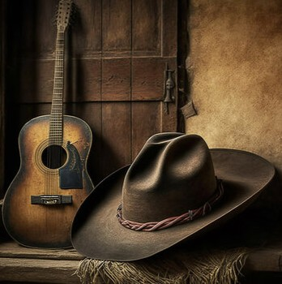
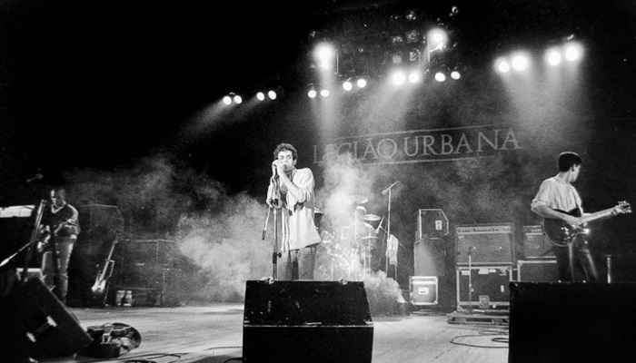
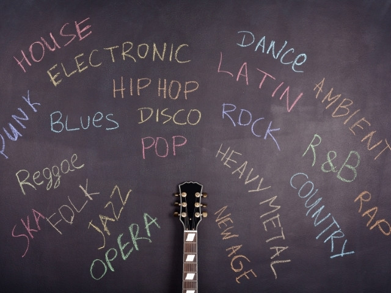

Músicas Favoritas

O que mais toca no meu fone e no rádio do carro é sertanejo. Mas tem que ser antigo

Curto bastante também rock antigo. Inclusive minha entrada de formatura foi com It's My Life de Bon Jovi

Sempre fui, e pretendo continuar sendo, bem eclético para as músicas — escuto de tudo um pouco
Dormi na praça, pensando nela.....